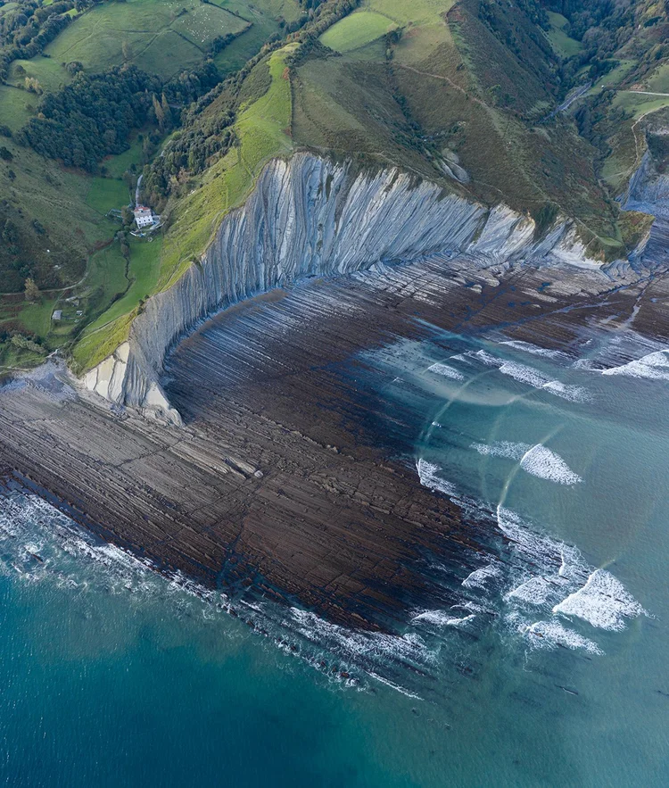
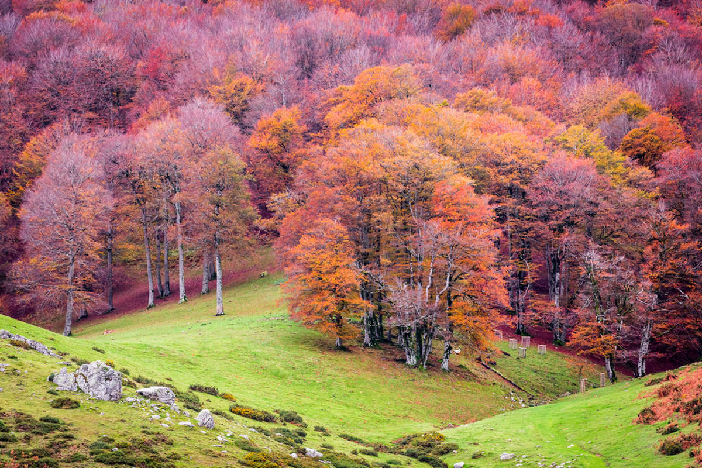
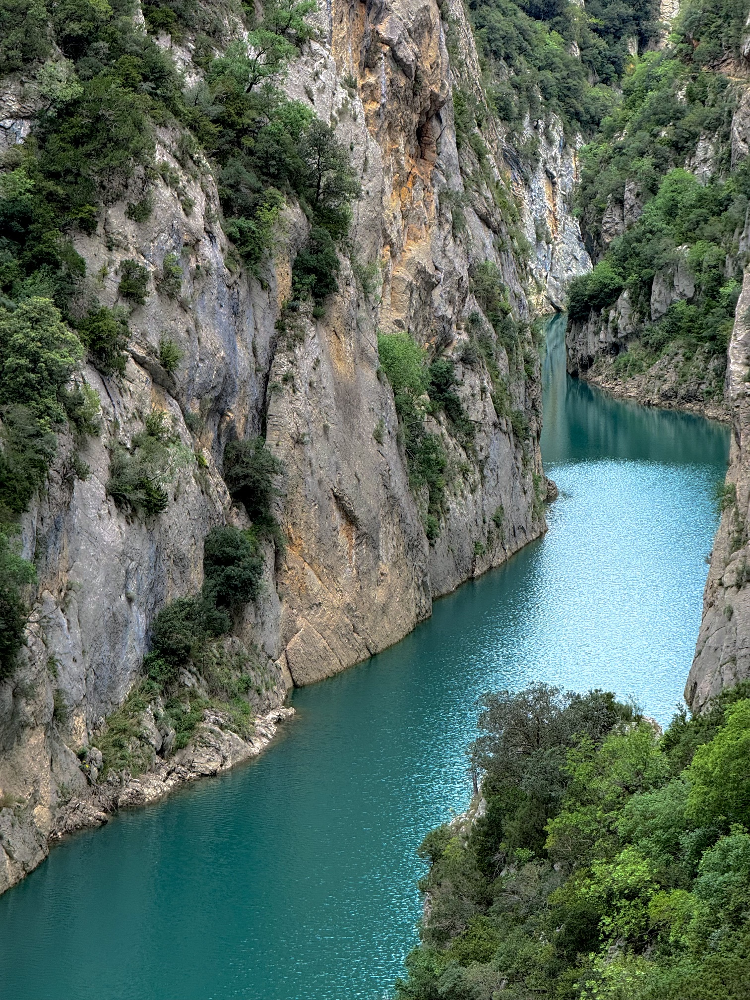
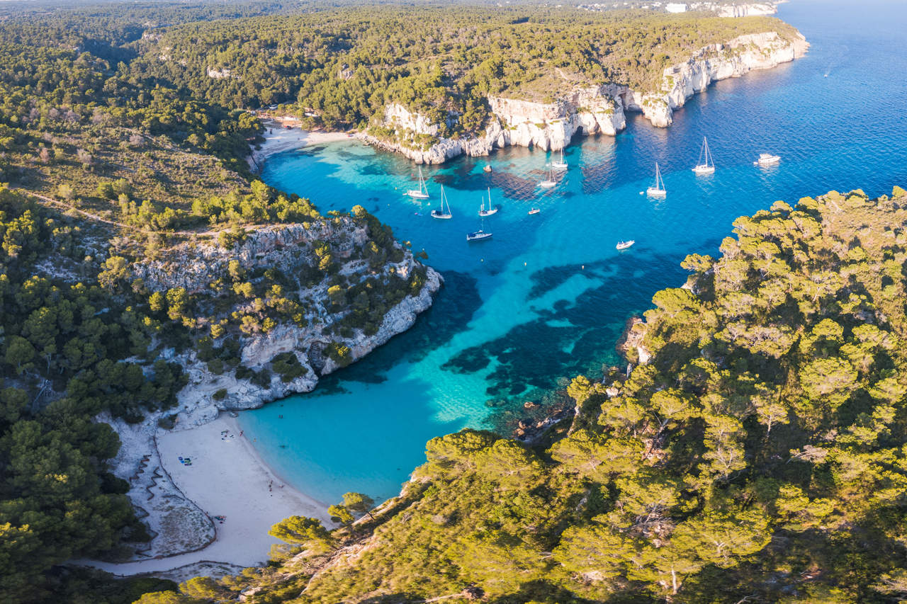

加载中…
加利西亚语
巴斯克语
加泰罗尼亚语
西班牙语
西班牙语
加泰罗尼亚语（14%）
加利西亚语（5%）
巴斯克语（2%）
Barcelona
Granada

Sagrada Familia （圣家堂）

La Alhambra （阿尔罕布拉宫）
Asturias

阿斯图里亚斯
Gipuzkoa

吉普斯夸
Navarra

纳瓦拉
Vielha

维耶拉
Lleida

莱里达
Menorca

梅诺卡岛
Almería

阿尔梅里亚
Sevilla

塞维利亚
Extremadura

火腿
La Rioja
红葡萄酒
Valencia

西班牙海鲜饭
西班牙总人口—
人均年收入15,948 欧元
马德里
向下滑动
高度 — 公里